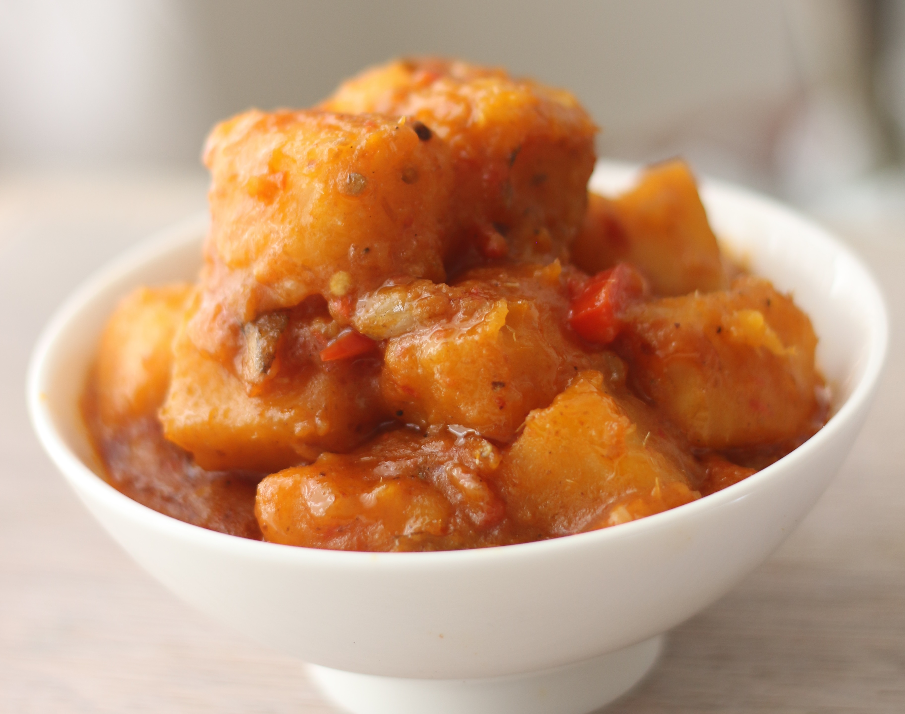

Yam Porridge

Description
Yam porridge is a porridge made from the thickening ability of starch from boiled yam. Yam porridge has a unique simple taste and is loved by people who want way less flavor confusing their taste buds.
Ingredients
- Yam
- Palm Oil
- Onion
- Protein(preferably fish)
- Chili
- Seasoning and Salt
- Leaves(i am bias to Pumpkin leaves)
Steps
- Peel and cut the yam into tiny pieces. Most people prefer really tiny pieces so as to get as much thickening as they can from the yam.
- Put a suitable sized pot on fire and put a suitable amount of water in it.
- Put in the oil, seasoning and salt, and prepared protein and bring to boil for a while. this is to bring out the taste into the water.
- Pour in your yam and let cook till it is properly done.
- Sprinkle your leaves inside and stir a bit and Food is ready.
- serve warm(hot porridge scalds!)